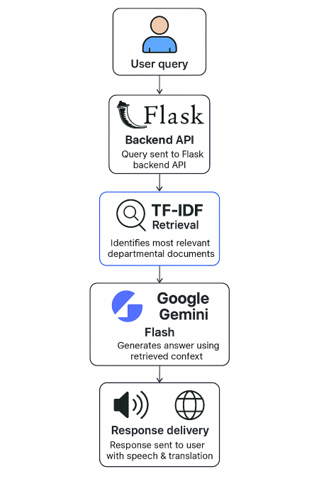

AIML Department Chatbot
A Retrieval-Augmented AI chatbot that provides instant, accurate responses regarding admissions, faculty, courses, research, academic calendar, events and departmental activities using Google Gemini + TF-IDF context search.

Project Highlights
Developed to automate student–department communication and reduce faculty workload using AI-driven Q/A.
Retrieval-Augmented Responses
Uses TF-IDF + Cosine Similarity to fetch relevant departmental data.
Google Gemini Integration
Generates professional, clean and formatted answers using Gemini Flash.
Multilingual + Voice Support
Supports English, Hindi, Gujarati, Tamil, Telugu with speech-to-text and TTS.
System Workflow
- 📌 User enters query via chatbot UI
- 📌 Query sent to Flask backend API
- 📌 TF-IDF retrieval identifies most relevant departmental documents
- 📌 Retrieved context + question sent to Gemini Flash model
- 📌 Model generates clean structured answer (bullet points/table if required)
- 📌 Response delivered to user with optional translation + speech output
{kind=link}
{kind=link}
Want to explore the code?
The TF-IDF index builder, Flask backend, Gemini response engine, and multilingual chatbot UI are available in the GitHub repository.
Open GitHub Repository